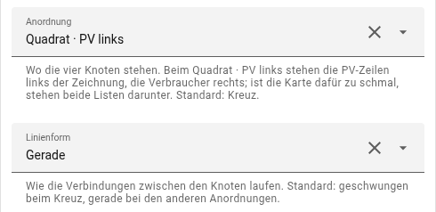
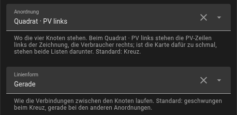

Anordnungen
Wo PV, Netz, Haus und Batterie stehen, ist wählbar: das Kreuz, zwei um 45° gedrehte Quadrate und zwei Dreiecke. Was die Karte zeigt, bleibt in jeder Anordnung gleich – Werte, Ringe, Punkte, Listen. Die Karte auf dieser Seite läuft mit erfundenen Werten und drei PV-Quellen.
Zum Ausprobieren: Die Schalter über der Karte stellen um, was du im Editor umstellen würdest; darunter steht, was davon in YAML landet.
Kreuz
PV oben, Netz links, Haus rechts, Batterie unten – die Anordnung, mit der die Karte angefangen hat, und der Standard. Die Verbindungen sind geschwungen.
Quadrat · PV rechts
Um 45° gedreht: PV oben rechts, Haus unten rechts, Netz oben links, Batterie unten links. Beide Listen stehen rechts, die PV-Zeilen auf Höhe der PV, die Verbraucher auf Höhe des Hauses.
Quadrat · PV links
In die andere Richtung gedreht: PV oben links, Haus oben rechts, Netz unten links, Batterie unten rechts. Die PV-Zeilen stehen links der Zeichnung, die Verbraucher rechts – jeder Fächer läuft zu seinem Knoten. Dafür braucht die Karte etwa 590 px Breite; ist sie schmaler, etwa auf dem Handy oder in einer Spalte der Abschnitte-Ansicht, stehen beide Listen darunter.
Dreieck · Haus Mitte
PV, Haus und Batterie übereinander, das Netz links vom Haus. Das Dreieck ist höher als breit und wird darum nie breiter als 320 px. Ohne Batterie entfällt das untere Drittel.
Dreieck · Batterie Mitte
Haus und Batterie vertauscht: PV oben, die Batterie in der Mitte mit dem Netz links daneben, das Haus unten. Die Listen stehen so symmetrisch – die PV-Zeilen oben auf Höhe der PV, die Verbraucher unten auf Höhe des Hauses. Die Linie von PV zum Haus schwingt links an der Batterie vorbei. Ohne Batterie sieht es aus wie das Dreieck · Haus Mitte.
Einstellen
Im Editor unter Darstellung stehen ganz oben Anordnung und Linienform. Die Linienform ist beim Kreuz geschwungen, bei den anderen Anordnungen gerade; beides lässt sich umstellen.

Im Energie-Modus zeigen die Pfeile an Netz und Batterie zur Mitte der Zeichnung, wenn Energie bezogen oder entladen wurde, und von ihr weg beim Einspeisen und Laden. In beiden Dreiecken stehen sie wie beim Kreuz.
layout: square_left # cross | square_right | square_left | triangle | triangle_battery
flow:
lines: curved # curved | straight